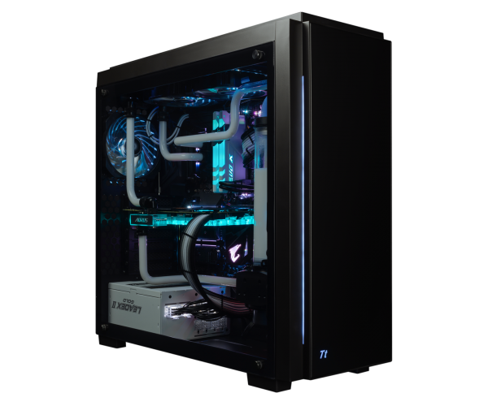

Комп'ютер (від англ. computer; лат. computator — обчислювач, лат. computatrum — рахувати, МФА: [kəmpjuː.Tə(ɹ)][1]), електронно-обчислювальна машина (ЕОМ) — програмно-керований пристрій для обробки інформації. За будовою, це може бути механічний або не механічний (електронний) пристрій, призначений для проведення обчислень, які можуть відбуватися дискретно або безперервно. У вузькому значенні — це електронний пристрій з можливістю програмування (раніше також називався «електронна обчислювальна машина»), який здійснює обчислення за заздалегідь визначеним алгоритмом — починаючи приблизно з 1950-х років практично всі комп'ютери є саме електронними.
